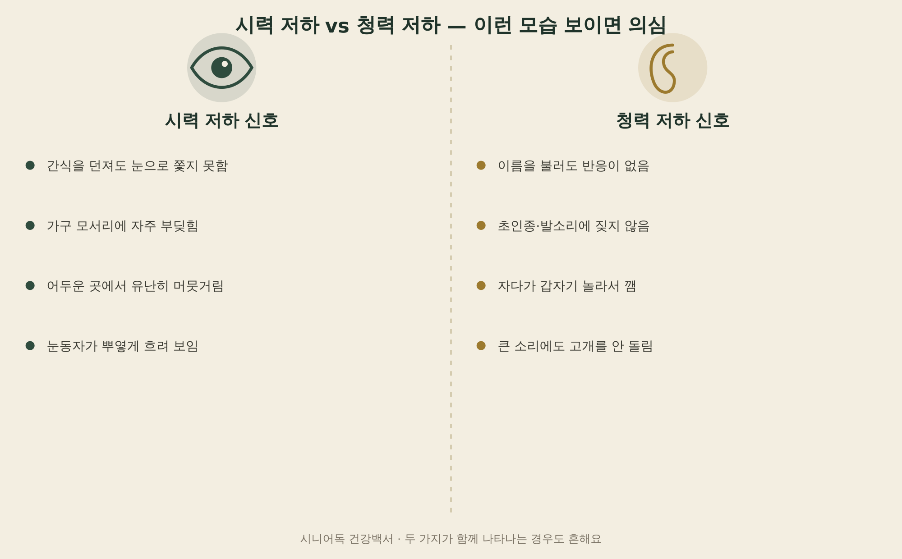
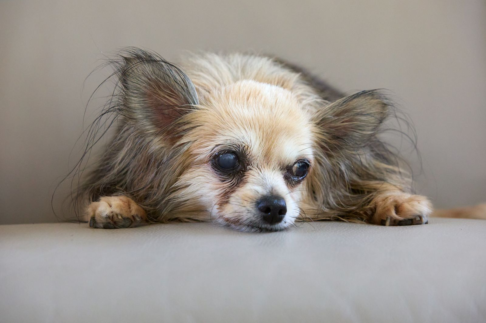
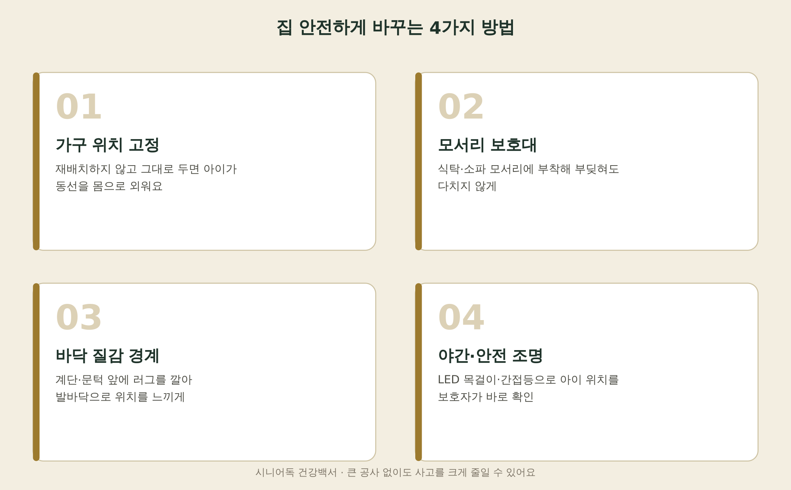
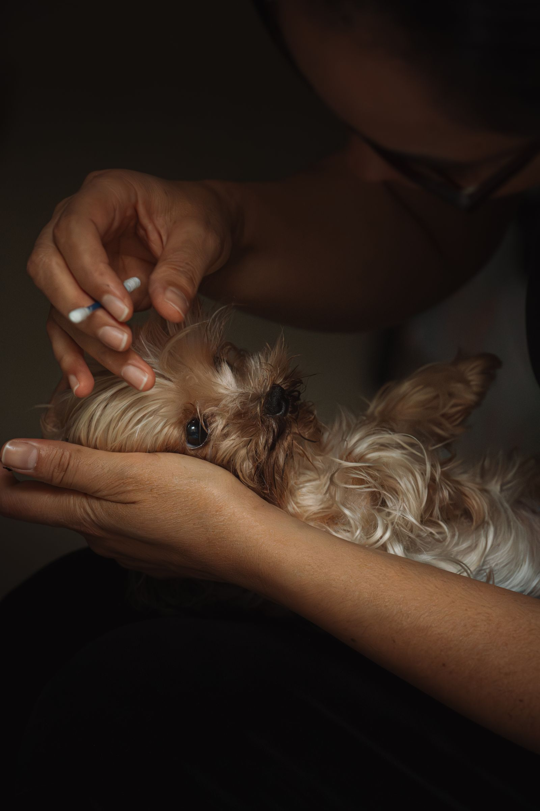

노령견 강아지
시력·청력 저하 대응 안전용품
백내장 같은 시력 저하와 노령성 난청은 노령견에게 아주 흔하게 나타나는 자연스러운 노화 신호예요. 갑자기 고집이 세지거나 예민해진 것처럼 보여도, 사실은 감각이 둔해지면서 생기는 자연스러운 변화인 경우가 많죠. 오늘은 집에서 시력·청력 저하를 알아채는 법부터, 큰 공사 없이 집을 안전하게 바꾸는 방법, 소통 방식을 바꾸는 법까지 정리해드릴게요.

· 백내장·노안으로 인한 시력 저하와 난청은 노령견에게 아주 흔하고, 자연스러운 노화 신호예요.
· 간식 낙하 테스트, 손전등 동공 반응으로 집에서도 시력 저하를 가늠해볼 수 있어요.
· 가구 배치를 바꾸지 않고 모서리 보호대·야간조명을 더하는 것만으로 사고 위험을 크게 줄일 수 있어요.
- 왜 노령견은 시력과 청력이 함께 떨어질까
- 시력 저하, 집에서 확인하는 법
- 청력 저하 신호 알아채기
- 집 안전하게 바꾸기 — 가구·바닥·조명
- 소통 방법 바꾸기 — 손신호와 접촉 신호
- 안전 대응에 도움되는 용품
- FAQ
왜 노령견은 시력과 청력이 함께 떨어질까
노령견에게는 수정체가 뿌옇게 변하는 백내장과 노령성 난청이 매우 흔한 노화 신호예요. 난청은 보통 13세 전후의 노견에게 많이 발생하고, 전체 반려견의 5~10% 정도가 난청을 겪는다고 알려져 있어요. 백내장은 수술 외에는 다른 치료법이 없고, 예방하거나 진행 속도를 늦추는 정도가 최선이에요. 두 감각이 함께 무뎌지는 경우가 많아서, 하나가 발견되면 다른 하나도 함께 살펴보시는 게 좋아요.
시력 저하, 집에서 확인하는 법
병원에 가지 않아도 집에서 간단히 가늠해볼 수 있는 방법이 두 가지 있어요. 첫째, 좋아하는 간식이나 장난감을 머리 위에서 떨어뜨려보세요. 시력이 괜찮다면 낙하를 보고 고개를 들거나 반응해요. 둘째, 핸드폰 손전등으로 눈 옆에서 천천히 빛을 비춰보세요. 건강한 눈은 동공이 수축하며 반응하지만, 반응이 둔하거나 없다면 시력 저하를 의심할 수 있어요.
| 구분 | 시력 저하 신호 | 청력 저하 신호 |
|---|---|---|
| 일상 행동 | 간식을 눈으로 쫓지 못함, 가구에 자주 부딪힘 | 이름을 불러도 반응 없음, 초인종·발소리에 안 짖음 |
| 환경 반응 | 어두운 곳에서 유난히 머뭇거림 | 자다가 갑자기 놀라서 깸 |
| 외적 변화 | 눈동자가 뿌옇게 흐려 보임 | 큰 소리에도 고개를 안 돌림 |

청력 저하 신호 알아채기
아이가 이름을 불러도 반응하지 않거나 가구에 자꾸 부딪힌다면, 이건 고집을 피우는 게 아니라 감각이 차단된 상태일 수 있어요. 시력이든 청력이든 저하가 진행되면 아이는 불안감을 더 크게 느끼고, 예전보다 보호자의 목소리나 손길에 더 의존하거나 갑자기 분리불안을 보이기도 해요. “고집이 세졌다”가 아니라 “감각이 둔해졌다”로 먼저 생각해보시는 게 아이를 이해하는 첫걸음이에요.
집 안전하게 바꾸기 — 가구·바닥·조명
큰 공사 없이도 사고 위험을 크게 줄일 수 있어요. 핵심은 가구 위치를 바꾸지 않는 것이에요 — 시력이 약해진 아이는 집안 구조를 몸으로 외워두기 때문에, 재배치는 오히려 위험을 키워요. 여기에 모서리 보호대로 부딪힘 부상을 막고, 계단·문턱 앞에는 러그를 깔아 바닥 질감으로 위치를 느끼게 해주세요. 야간 조명이나 LED 목걸이는 어두운 곳에서 아이 위치를 보호자가 바로 확인하는 데도 도움이 돼요.

| 방법 | 내용 |
|---|---|
| 가구 위치 고정 | 재배치하지 않고 그대로 — 동선을 몸으로 외우게 |
| 모서리 보호대 | 식탁·소파 모서리에 부착해 부딪혀도 다치지 않게 |
| 바닥 질감 경계 | 계단·문턱 앞 러그로 발바닥으로 위치를 느끼게 |
| 야간·안전 조명 | LED 목걸이·간접등으로 보호자가 위치 바로 확인 |
소통 방법 바꾸기 — 손신호와 접촉 신호
시력이나 청력이 약해진 아이는 갑작스러운 신체 접촉에 놀라 방어적으로 반응할 수 있어요. 만지기 전에는 부드러운 목소리로 먼저 신호를 주거나, 바닥을 가볍게 두드려 진동으로 알려주는 습관을 들이면 훨씬 안심해요. 손신호를 함께 훈련해두면 소리에 의존하지 않고도 아이와 대화할 수 있는 새로운 방법이 생겨요. 급하게 다가가기보다는 아이의 시야 안에서 천천히 접근하는 것도 중요해요.

안전 대응에 도움되는 용품
야간에도 아이 위치를 바로 확인할 수 있는 LED 조명과, 부딪혀도 다치지 않게 막아주는 모서리 보호대가 있으면 훨씬 안심하고 지낼 수 있어요.
준비 중
야간 안전조명 펜던트
목걸이에 달아두면 어두운 거실이나 산책길에서도 아이 위치를 한눈에 확인할 수 있어요. 시력이 약해진 아이를 밤에도 안전하게 지켜보는 데 도움이 돼요.
도그아이 강아지 LED 블링커 펜던트 4종 세트 인식표 ↗준비 중
가구 모서리 보호대
식탁·소파·거실장 모서리에 부착해 부딪혀도 충격을 흡수해줘요. 재배치 없이도 집을 훨씬 안전하게 만들 수 있는 가장 간단한 방법이에요.
아가드 모서리 보호대 일반형 ↗자주 묻는 질문
Q. 백내장은 치료 안 하면 실명하나요?
A. 진행성 질환이라 방치하면 시력을 완전히 잃을 수 있어요. 완치는 수술이 유일한 방법이고, 수술 외에는 진행 속도를 늦추는 관리가 최선이라 조기에 안과 검진을 받아보시는 걸 추천해요.
Q. 시력을 잃은 아이가 갑자기 사나워졌어요, 왜 그런가요?
A. 예상치 못한 접촉에 놀라서 방어적으로 반응하는 경우가 많아요. 공격성이 아니라 두려움의 표현에 가까워요. 만지기 전에 목소리나 바닥 진동으로 미리 신호를 주는 습관을 들이면 훨씬 줄어들어요.
Q. 가구 재배치를 자주 해줘도 괜찮을까요?
A. 오히려 위치를 고정해두는 편이 안전해요. 시력이 약한 아이는 집 구조를 몸으로 기억해서 다니기 때문에, 잦은 재배치는 부딪힘 사고 위험을 더 키울 수 있어요.